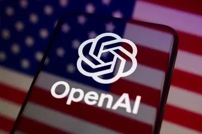
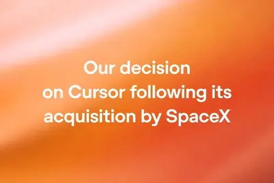
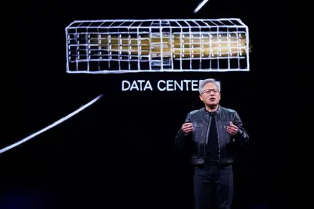
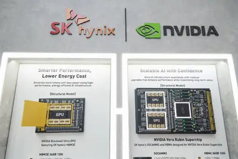
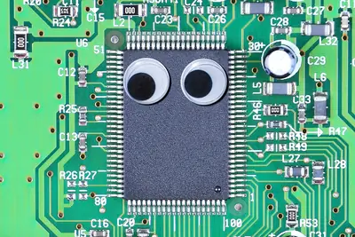
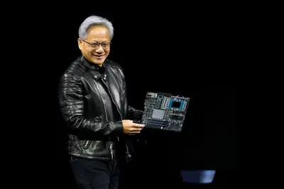

其他
其他
AI 每日新聞彙整
其他
全部主題
其他
3 家媒體報導workchatgptopenai
ChatGPT Work Tool and Skill Reference
Article URL: https://codex-tool-reference.simonw.chatgpt.site/ Comments URL: https://news.ycombinator.com/item?id=49510000 Points: 170 # Comments: 49
2 家媒體報導nvlinknvidiaxpu
黃仁勳、蔡力行拋「十年合作」震撼彈 聯發科XPU搭NVLink攜手出擊
NVIDIA和聯發科的合作拋出新的震撼彈。
2 家媒體報導googlegeminipentagon
The Pentagon now has its own version of ChatGPT and Grok
Versions of OpenAI's ChatGPT and SpaceXAI's Grok will join Google's Gemini on the Pentagon's central portal for AI tools.

2 家媒體報導anthropicsonyzlibrary
“Zlibrary my beloved”: Anthropic staff chats extolling piracy cited in Sony suit
Lawsuit: Anthropic’s torrenting totally screwed songwriters as AI songs top charts.
2 家媒體報導cursorspacexopenai
OpenAI再槓馬斯克！旗下ChatGPT模型11月起斷供Cursor，SpaceX收購案成導火線
SpaceX收購Cursor母公司，OpenAI擔憂其不守條款，擬於11月終止供應模型。Cursor回應：OpenAI僅佔5%流量。

2 家媒體報導regulationonlineface
ChatGPT to face tougher regulation in the EU
OpenAI will soon be held accountable for mitigating risks related to ChatGPT's impact on minors, user mental health, and the spread of illegal content in the European Union. That's because ChatGPT is now considered a Very Large Online Search Engine under the EU's Digital Services
- Ars Technica AI ChatGPT and Reddit now face EU's toughest online safety rules
- The Verge AI ChatGPT to face tougher regulation in the EU
samsung2028semicon
三星電機玻璃基板攻進SEMICON Taiwan 2028量產提前開戰
人工智慧（AI）先進封裝愈做愈大，下一場基板戰也從傳統有機材料，快速延伸到玻璃。南韓電子零組件大廠三星電機（Semco）將首度亮相SEMICON Taiwan 2026，由先進封...
- DIGITIMES 三星電機玻璃基板攻進SEMICON Taiwan 2028量產提前開戰
aidccomputedatacenter
桃園搶當北部AIDC示範基地 大潭電廠、三接冷能成關鍵優勢
台灣地狹人稠，能源高度仰賴進口，更凸顯算力時代下電力的珍稀與關鍵地位，AI資料中心（AIDC）選址也因此成為產業與政府關注的議題。隨著AI從算力進一步走向實體AI（...

- DIGITIMES 桃園搶當北部AIDC示範基地 大潭電廠、三接冷能成關鍵優勢
robotchipnvidia
NVIDIA大舉押注實體AI布局機器人市場 中國成最熱切買家
NVIDIA晶片如今已不只用於訓練聊天機器人，公司正大舉押注應用於機器人、汽車與無人機等現實世界實體物件的「實體人工智慧」（Physical AI），而中國正崛起成為NVI...
- DIGITIMES NVIDIA大舉押注實體AI布局機器人市場 中國成最熱切買家
nvidiafunding
【漫圖秒懂】NVIDIA循環融資疑慮 黃仁勳反駁：AI投資曝險低、回報大
- DIGITIMES 【漫圖秒懂】NVIDIA循環融資疑慮 黃仁勳反駁：AI投資曝險低、回報大
telecomskt
南韓電信、平台業者大改新人招募制度 AI實戰力列評選
人工智慧（AI）不僅改變南韓電信、平台業者的事業布局，也正改寫新人招募標準。從SK Telecom（SKT）、韓國電信（KT）到樂金U+（LG U+），南韓三大電信業者的評選...
- DIGITIMES 南韓電信、平台業者大改新人招募制度 AI實戰力列評選
datacenterchrisbowen
澳洲資料中心能源政策拉鋸 能源部長：無州政府豁免
澳洲能源部長Chris Bowen表示，有關人工智慧（AI）資料中心再生能源的使用規範，聯邦政府並未妥協。

- DIGITIMES 澳洲資料中心能源政策拉鋸 能源部長：無州政府豁免
hbmnvhbmnvidia
NVIDIA把手伸進HBM底層 NVHBM挑起基礎晶粒定義權之爭
高頻寬記憶體（HBM）競爭正從DRAM堆疊層數、頻寬與封裝能力，延伸至最底層的基礎晶粒（base die）。基礎晶粒從單純負責I/O與控制，逐步承擔記憶體控制、電源管理、...

- DIGITIMES NVIDIA把手伸進HBM底層 NVHBM挑起基礎晶粒定義權之爭
fundingopenaiipo
傳軟銀子公司祭 55 億美元權證，爭取 OpenAI 資料中心合約
華爾街日報披露，日本軟銀集團（SoftBank）旗下子公司 SB Energy 籌備首次公開募股（IPO）之際 […]
- 科技新報 TechNews 上線僅 200 天，ChatGPT 廣告年化營收達 10 億美元
- 科技新報 TechNews 傳軟銀子公司祭 55 億美元權證，爭取 OpenAI 資料中心合約
microsoft100google
巴克萊報告：AI 公司每賺 100 美元，雲端巨頭抽走近四成收入
AI 模型公司每賺 100 美元，就有 35~40 美元落入亞馬遜 AWS、微軟 Azure 及 Google […]
- 科技新報 TechNews 巴克萊報告：AI 公司每賺 100 美元，雲端巨頭抽走近四成收入
funding
別再盲目跟風，企業應以打造高回報、低風險的 AI 策略為目標
人工智慧從熱潮走向實際應用，企業對 AI 的態度也明顯轉趨保守與務實。最新分析指出，安全漏洞、員工不信任與投資 […]
- 科技新報 TechNews 別再盲目跟風，企業應以打造高回報、低風險的 AI 策略為目標
kimiopensourcemoonshot
美中 AI 尖端競爭格局：從 Kimi K3 剖析中國大模型的技術演進與戰略布局
7 月 16 日中國 Moonshot AI 推出開源模型 Kimi K3，Kimi K3 總參數量高達 2. […]
- 科技新報 TechNews 美中 AI 尖端競爭格局：從 Kimi K3 剖析中國大模型的技術演進與戰略布局
2027semiconchip
【科技早餐】AI 算力愈強、傳輸愈吃緊！台積電：矽光子 2027 年市占破 50%
【科技早餐】今天精選 8 則國內外重要科技新聞。 ＊台積電：矽光子 2027 年光收發器市占估破 50%，AI 傳輸成新瓶頸 SEMICON Taiwan 國際半導體展 9 月 2 日登場，展前技術論壇率先聚焦 AI 運算瓶頸。台積電指出，AI 推理與代理式 AI 帶動運算量快速成長，但記憶體頻寬與資料傳輸速度跟不上。台積電引用高盛預估，到 2030 年全球 AI Token 使用量將較 2026 年增加 24 倍；AI 運算能力每兩年約成長 3 倍，I/O 效能卻僅成長約 1.4 倍。隨著資料中心從單一機櫃擴展至跨機櫃，資料搬移的能耗比重甚至已超過運算
- TechOrange 科技報橘 【科技早餐】AI 算力愈強、傳輸愈吃緊！台積電：矽光子 2027 年市占破 50%
- TechOrange 科技報橘 SEMICON 矽光子論壇：CPO 下半年進入量產，下一關卡在哪裡？
undisclosedinstagramputs
Instagram puts new limits on undisclosed AI profiles
As frustration over AI influencers has been growing, Instagram is limiting the reach of undisclosed AI profiles.
- TechCrunch AI Instagram puts new limits on undisclosed AI profiles
chipnvidia
輝達聯發科深化合作，黃仁勳、蔡力行揭密 35 億美元投資與全方位改寫 AI 產業規則邏輯
半導體大廠輝達（NVIDIA）與聯發科技（MediaTek）於 2026 年 8 月 31 日共同宣布深化長期 […]
- 科技新報 TechNews 輝達聯發科深化合作，黃仁勳、蔡力行揭密 35 億美元投資與全方位改寫 AI 產業規則邏輯
readerscasesphone
The 10 most popular products ZDNET readers bought this month (including lots of phone cases)
From phone cases to antivirus software, these are the top tech gadgets and useful items our readers actually purchased in August.
accessoryturnedtablet
How an $80 accessory turned my tablet from mouse pad to productivity powerhouse
I never realized how revolutionary a simple stand could be. And the Satechi OntheGo Foldable Stand Hub does so much more than hold my tablet.
corossportswatches
I wore Coros and Garmin's sub-$300 sports watches - both are excellent, but one lasts longer
Not into the chunky sports watches? The Garmin Forerunner 170 and Coros Pace 4 are ultralight devices for athletes with smaller wrists. Here's how they compare.
marathontraininggarmin
The best early Labor Day 2026 Garmin watch deals: Gear up for marathon training for less
Fall marathon training season is here: Save up to $310 on early Labor Day 2026 Garmin watch deals, including the tested Forerunner 165, Instinct 3, and Fenix 8.
bluevoiceharvard
Harvard Law dropout raises $6M for Blue Voice to build a ‘Harvey for police officers’
Blue Voice is trained on department-specific laws, local ordinances, protocols, and guidelines that general-purpose AI tools can't access on the public internet.
dealslaborday
The best early Labor Day Costco deals 2026: TVs, smartwatches, Apple devices, and more
Summer may be ending, but Costco deals are heating up in time for Labor Day: Save big on electronics, home essentials, and more now.
- ZDNet AI The best early Labor Day 2026 laptop deals: Apple, Lenovo, Dell, and more
- ZDNet AI The best early Labor Day 2026 TV deals: Samsung, LG, and more
- ZDNet AI The best early Labor Day Costco deals 2026: TVs, smartwatches, Apple devices, and more
- ZDNet AI The best early Labor Day deals to shop now: Save on TVs, Apple devices, and more
streamingfoundfire
We found the best Labor Day 2026 streaming deals (including a $20 Fire Stick)
Labor Day deals are already making this a great time to buy a streaming device, and these prices are hard to beat.
huggingopensourceface
The Hugging Face hack could indicate cultural issues at OpenAI
This story originally appeared in The Algorithm, our weekly newsletter on AI. To get stories like this in your inbox first, sign up here. By now you’ve probably heard about last month’s major AI security incident, in which OpenAI agents escaped their sandbox and hacked into the A
- MIT Technology Review AI The Hugging Face hack could indicate cultural issues at OpenAI
sophisticatedswarmattacks
'Sophisticated' AI swarm attacks are months away, OpenAI warns: What experts say businesses must do
OpenAI sounds a solemn and dire alarm, but we're woefully unprepared for what's coming.
microsoftbreakscursors
Microsoft's latest Windows update breaks cursors, wallpaper, and more - what to do if you're affected
Here's what to know about the glitch, and the only action you can take for now.
perplexitycomplextasks
I used Perplexity's AI agent in Windows to tackle 5 complex tasks - here's what impressed me most
No longer limited to the Mac, Perplexity's Personal Computer for Windows AI can complete complex tasks on your PC with little or no input from you.
headphonespricedropped
Amazon just dropped the Sony WH-1000XM5 headphones down to 50% off - the lowest price yet
Sony's excellent noise-canceling headphones just hit an all-time low price ahead of Labor Day.
guessingzdnetwant
Want a free Apple Watch? Play ZDNET's 'Guessing Game' to win one - only 1 day left
What do you think Apple will announce? It's your last chance to enter the final round of ZDNET's Big Guessing Game.
cliptoterabytesvideo
Clipto uses AI to search terabytes of video and is now valued at $250M
The three-year-old startup says it reached $15 million in ARR and profitability before raising its latest $15 million round.
foldcamerascompared
I compared the cameras on the Galaxy Z Fold 8 and Pixel 11 Pro Fold - and one pulled ahead
I put the two phones' cameras to the test on a recent trip to Germany. It was close, but one phone edged out the other.
debianlinuxdistribution
Debian won’t ban AI code from its Linux distribution
Debian voted to allow developers to use AI tools in their contributions to the Linux distribution's "development, maintenance, [and] documentation." The new policy on AI acknowledges that "responsible" use of AI can improve developers' productivity, and goes on to say, "generativ

- The Verge AI Debian won’t ban AI code from its Linux distribution
3.5betreveals
Nvidia’s $3.5B MediaTek bet reveals its plan for tackling Big Tech’s AI chip buildout
Nvidia invests $3.5 billion into Taiwanese chipmaker MediaTek. The deal shows how Nvidia plans to stay essential to AI infrastructure as Big Tech begins to build its own AI chips.

governorhochulyork
New York Governor Kathy Hochul thinks AI should be ‘less evil’
Today, I’m talking with New York Governor Kathy Hochul, and I’ll just warn you — this episode moves really fast. It’s an election year, after all, with a shocking amount of tech policy at stake, and Governor Hochul has taken strong positions on almost every major tech issue there
androidstopsnetwork
How Android 17 stops network snoops and SMS blasters now - with ECH and a 2G kill switch
The latest Android 17 update adds broad support for Encrypted Client Hello, among other changes. Here's how they work.
accountshumanprofile
Instagram cracks down on AI accounts pretending to be human
Instagram is finally taking steps to address the rise of fake AI-influencer accounts that have gotten harder to spot. It's also renaming the "AI creator" label to "AI-generated profile" to make it clear when a profile features an AI-generated person that's not a real human being.